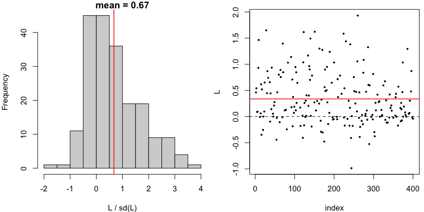
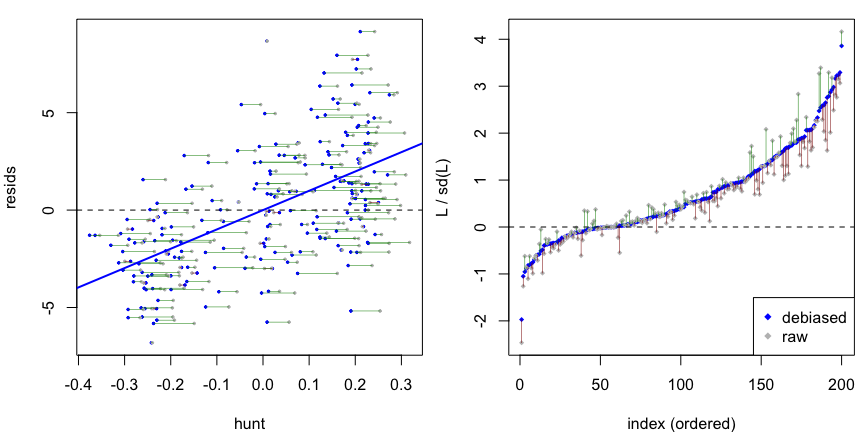

Debiased (Neyman-orthogonalized) score tests for assessing whether a semiparametric or parametric regression model is well-specified and for comparing nested models.
The test uses a hunt-and-test strategy with sample splitting: on a held-out hunt sample, it fits the null model and uses machine learning to find a direction in which the null model’s score seems positive; on an independent test sample, it assesses the significance of the score in the hunted direction. The test employs orthogonalization to eliminate the plug-in bias from estimating the null model, yielding a test statistic that is asymptotically standard normal under the null without requiring a parametric form for the alternative. Methods are provided for glm, lm, and mgcv::gam fits as well as for detecting heterogeneous treatment effects.
Installation
You can install the package from CRAN with
install.packages("dScoreTest")or the development version from GitHub with
# install.packages("remotes")
remotes::install_github("richardkwo/dScoreTest")Usage
Two entry points, both S3 generics that dispatch on the fitted model:
-
gof_test()— is a fitted model well-specified, against a nonparametric alternative? -
compare_models()— does a nested alternative capture signal that the null model misses?
library(dScoreTest)
library(mgcv)
set.seed(42)
dat <- gamSim(eg = 1, n = 400, dist = "normal", scale = 2, verbose = FALSE)We simulate from the four-term additive truth in mgcv::gamSim(eg = 1), y = f0(x0) + f1(x1) + f2(x2) + f3(x3) + noise, where f3 = 0 and f0, f1, f2 are non-linear.
Goodness of fit
gof_test() checks the functional form of a fitted model against a nonparametric alternative. A well-specified non-linear additive model is not rejected, while forcing the model to be linear is.
fit.gam <- gam(y ~ s(x0) + s(x1) + s(x2) + s(x3), data = dat)
gof_test(fit.gam) # well-specified: not rejected
#> Debiased score test:
#> y ~ X, with X consists of x0, x1, x2, x3.
#> (hunt.style = optimal, hunt.method = grf, debias.method = standard)
#> n = 400, two-way split: hunt = 200, debias & test = 200
#>
#> T = 0.6274, p-value = 0.265214
fit.lm <- lm(y ~ x0 + x1 + x2 + x3, data = dat)
gof_test(fit.lm) # misspecified:
#> Debiased score test:
#> y ~ X, with X consists of (Intercept), x0, x1, x2, x3.
#> (hunt.style = optimal, hunt.method = grf, debias.method = standard)
#> n = 400, two-way split: hunt = 200, debias & test = 200
#>
#> T = 9.7238, p-value = 1.19302e-22Note that gof_test only sees the covariates in the model’s formula, so it tests whether E[y | covariates] has the assumed form, not whether covariates are missing.
Model comparison
compare_models() tests a null model against a nested alternative, and detects signal living in the alternative’s extra terms. Here the null drops s(x2) (a real, sharp effect), while the alternative includes it.
# null model: well-specified since f3 = 0 in DGM
fit.gam.null <- gam(y ~ s(x0) + s(x1) + s(x2), data = dat)
compare_models(fit.gam.null, fit.gam)
#> Debiased score test:
#> y ~ X, with X consists of x0, x1, x2, x3.
#> (hunt.style = optimal, hunt.method = gam, debias.method = standard)
#> n = 400, two-way split: hunt = 200, debias & test = 200
#>
#> T = 0.9375, p-value = 0.174243
# null model: misspecified, missing f2
fit.gam.mis <- gam(y ~ s(x0) + s(x1), data = dat)
res <- compare_models(fit.gam.mis, fit.gam)
res
#> Debiased score test:
#> y ~ X, with X consists of x0, x1, x2, x3.
#> (hunt.style = optimal, hunt.method = gam, debias.method = standard)
#> n = 400, two-way split: hunt = 200, debias & test = 200
#>
#> T = 9.5337, p-value = 7.58703e-22Both functions return a dScoreTest object with print(), summary(), and plot() methods. The hunt for a direction of misspecification can use the optimal (hunt.style = "optimal", default), weighted-least-squares ("wls"), or vanilla ("vanilla") algorithm.
plot(res)
